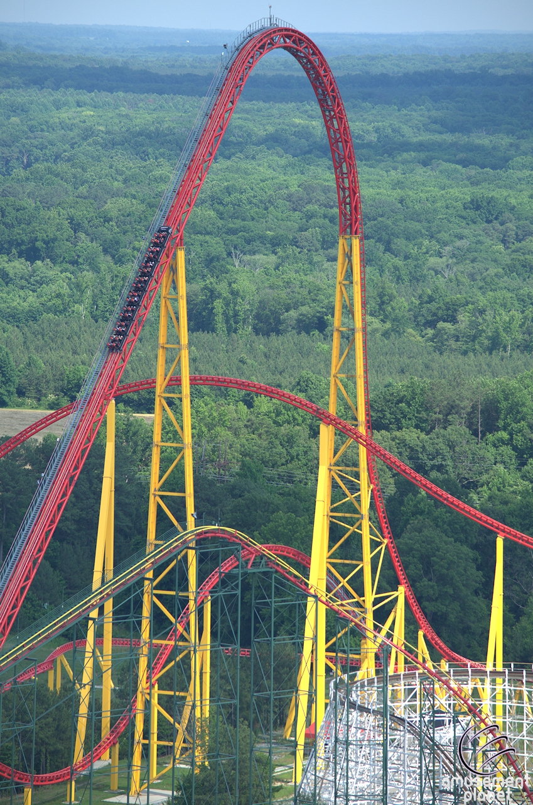
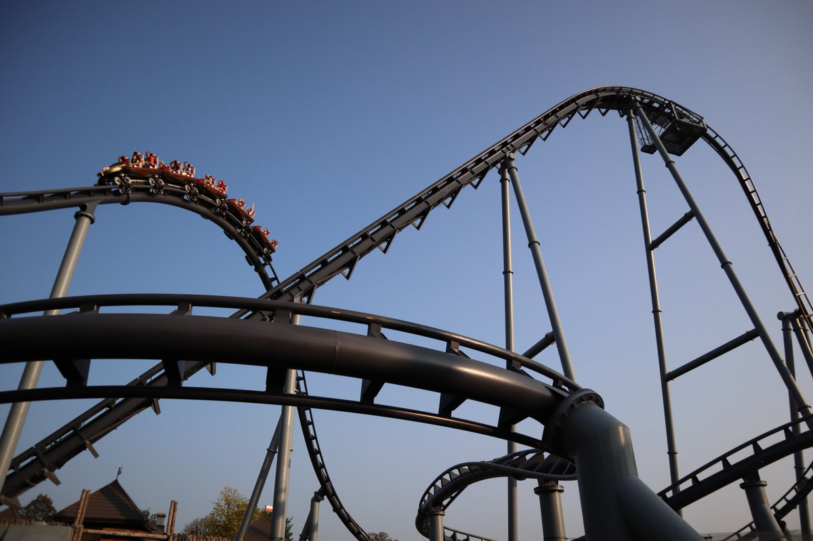

In the roller coaster industry, there are many different companies that manufacture rides. Each one makes very different rides from the others. They each have their own unique style and feel to their rides. Some stick with models that they have built before, and some take risks and build new and unique models that have never been done before. Some manufacturers are better than others, but they all have there own niche in the coaster world. Depending on what type of ride parks are looking for.
B&M
B&M stands for Bolliger and Mabillard. They are known for making good, reliable steel coasters. Their models include floorless, stand up, sit down, hyper, giga, inverted, dive, and wing coasters, and they have recently introduced a new multi-launch coaster called the surf coaster.
GCI
GCI stands for great coasters internationally. They were formed when the company CCI went bankrupt in 2002. People from CCI split off to form two new companies; GCI and the Gravity Group. GCI makes specifically wooden coasters that are known for their plethora of airtime moments. They make great rides in the United States, however they also have built lots of rides in China that tend to be even better than the ones in America.
RMC

RMC stands for Rocky Mountain Construction. They started out as a small construction company, they then started to fix old wooden coasters. The founder, Fred Grubb, came up with the idea for the hybrid coaster. This is a coaster that has a wooden structure with a steel track. He thought that this would make coasters hold up better over time, and not need nearly as much maintenance as traditional wooden roller coasters. He finally made this idea a reality in 2011, and has been making hybrid, wooden, and single rail coasters ever since. Basically everything they build is an elite, world class ride. They have quickly built their way up in the industry, and are now widely known as one of the best coaster manufacturers out there.
Intamin
Intamin is definitely one of the most diverse manufacturers. Some companies tend to stick what they know, and just keep making the same types of rides. However Intamin makes many different types of coasters. They make hypers, gigas, stratas, wooden coasters, various types of launch coasters, and much more. The only problem with intamin is that their rides tend to be unreliable. Their rides just tend to break down, and have more maintenance issues than most other manufacturers do. Overall Intamin has consistently been making rides for a long time, and is highly praised by coaster enthusiasts as one of the best coaster manufacturers out there.
Arrow Dynamics
Arrow Dynamics is a manufacturer that makes exclusively steel coasters. They started making coasters in 1959, and became one of the most innovative and influential manufacturers ever. They made the first steel coaster, the first suspended coaster, the first 4th dimension coaster, and many other firsts in the coaster industry. In 1975 they made “Corkscrew”. This was the first roller coaster with an inversion since a few in the 1800s. Arrow made many more looping coasters through the 1980s and 90s. They went bankrupt in 2001 because of the high cost of the coaster called X (now X2). Their legacy lives on today through many other manufacturers that have adopted their ideas. They left a lasting impact on the roller coaster industry, and made coasters how they are today.
Vekoma
Vekoma is a company that has been making coasters since 1979. In the early years of Vekoma, they made lots of their SLC (suspended looping coaster) and boomerang models. Both of these are notoriously terrible rides. They also made a few other rides during this era such as the tilt coaster, flying dutchman, and one wild mouse. Overall they weren’t the best manufacturer back then. However, in recent years they have drastically improved their ride quality. They have made many amazing new models that are all exceptionally good rides. These new age Vekomas have yet to come to the United States, but have been popular throughout Europe and Asia. This new era of rides in recent years has quickly made Vekoma a great manufacturer, and made them a real competitor in the coaster industry.